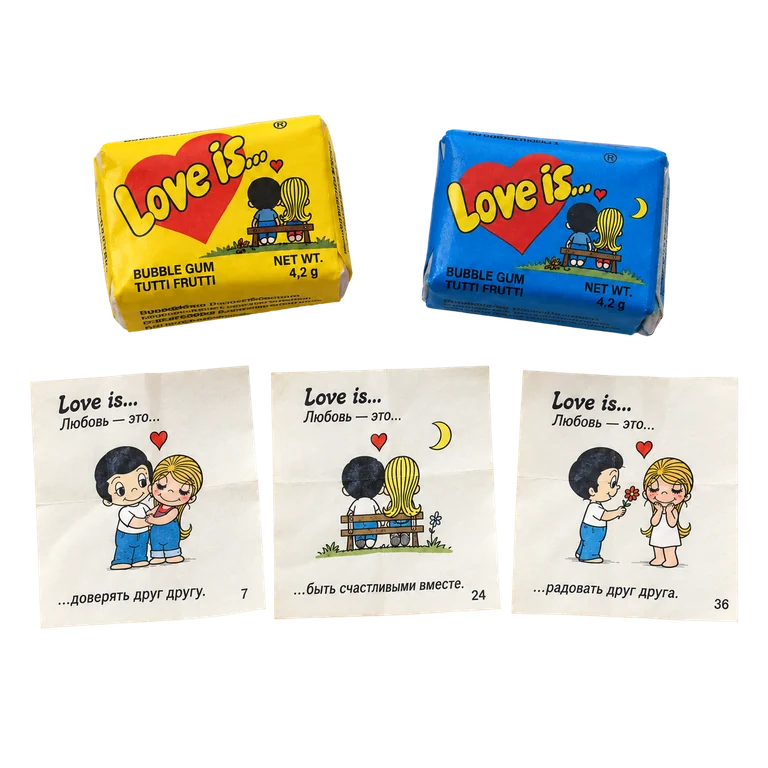
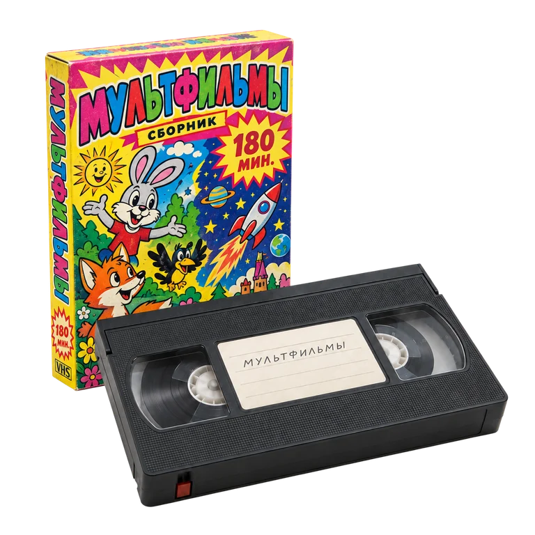
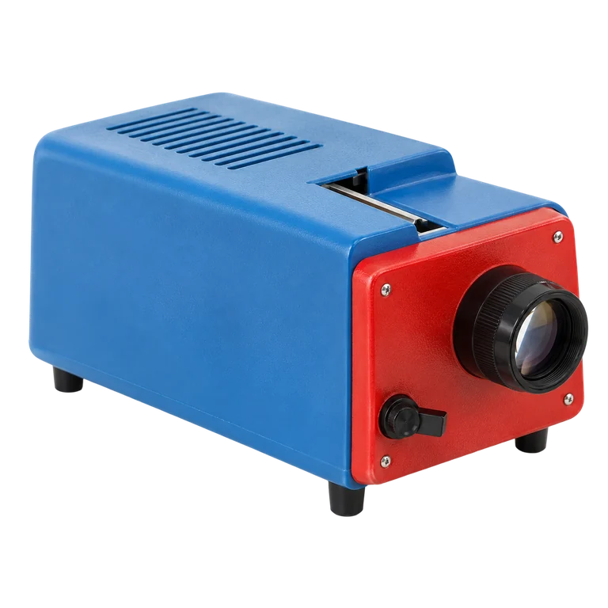
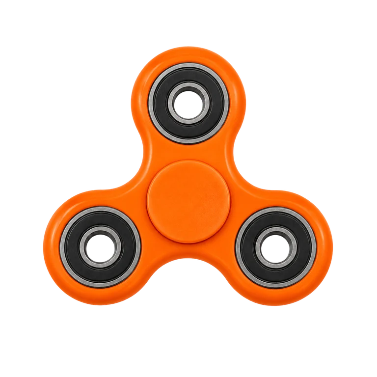

Помните?
Желтый картридж, на котором обещали 9999 игр.

Вкладыш, которого не хватало до полной коллекции.

Кассета, которую приходилось перематывать карандашом.
Статус ВКонтакте.
Поп-ит, внезапно появившийся у половины класса.
Иногда одной такой вещи хватает, чтобы вспомнить гораздо больше, чем сам предмет:
комнату, двор, одноклассников, звук включающегося телевизора, правила обмена вкладышами и совершенно серьезные споры о том, у кого и какая вещь круче.
От детства 1960-х
до детства сегодняшних детей
Вместе с VK Видео приглашаем вас в путешествие во времени — от детства 1960-х до детства сегодняшних детей. По пути вспомним вещи, о которых когда-то мечтали, которые было сложно найти, выпросить у родителей или выменять у одноклассника — а сегодня уже приходится объяснять что это собственным детям. И увидим совсем новые предметы — те, которые однажды станут частью их воспоминаний о детстве.

1964–80-е- 1990-е
- 2000-е

2010-е- 2020-е
А «Спокушки»
всегда с нами
Все эти эпохи очень разные. Но один экспонат объединяет их все — культовая передача «Спокойной ночи, малыши!». Телепрограмма впервые вышла в эфир в 1964 году, ровно там, где начинается наше путешествие. За следующие шестьдесят с лишним лет телевизор успел превратиться из огромной коробки с ручками в экран смартфона, появились видеомагнитофоны, компьютеры, соцсети, стримы и вирусные вертикальные видео. Менялись ведущие, заставки и телеканалы, менялись поколения, а Хрюша, Степашка, Филя и Каркуша все это время желали малышам спокойной ночи.
Сегодня рядом с ними оказываются герои современных детей — блогеры в шоу «Спокойной ночи, малыши! Ждут друзей» в VK Видео. Поэтому вместе с игрушками, гаджетами и прочими артефактами времени через весь музей тонкой красной нитью пройдет еще одна история — как менялись сами «Спокушки» и как передача, придуманная для телевизора шестидесятых, добралась до эпохи онлайн-видео.
Наши экскурсоводы
Ну и какой музей без экскурсоводов. Социальный антрополог Анна Гребенникова поможет разглядеть за игрушками и гаджетами то, что обычно не попадает в семейный фотоальбом — то, как дети разных поколений знакомились, обменивались, договаривались, искали своих и отвоевывали пространство без взрослых. А психолог Наталья Кисельникова посмотрит на те же эпохи с другой стороны: что действительно менялось вместе с телевизорами, приставками и смартфонами — и почему взрослые уже много десятилетий уверены, что новые тренды могут испортить их детей.
Как предметы рассказывают о поколениях

Анна Гребенникова
Историк, социальный антрополог
«Как правило, детство запоминается не через исторические события, а через повседневную материальную среду: звуки, запахи, цвета, фактуры.»
Символами эпохи становятся вещи, вокруг которых складывался коллективный опыт: ими обменивались, их одалживали, их хотели, даже если у самого ребенка их не было.
За последние десятилетия детство стало менее материальным, но его социальные механизмы почти не изменились. Детям по-прежнему нужны свои ритуалы, свое собственное пространство, свои способы обмена и свои группы. Раньше эту роль играли вкладыши и фишки, сегодня — стикеры и игровые чаты.
Историк, социальный антрополог, магистр истории ННГУ им. Лобачевского, автор лекций по истории и фольклору, научный журналист
Почему детству так важны артефакты

Наталья Кисельникова
Кандидат психологических наук
Базовые потребности ребенка остаются прежними: предсказуемость, принадлежность к своим, возможность распоряжаться частью своего времени и пространство для воображения.
«Каждое поколение взрослых опасается, что какая-то новинка что-то у ребенка отнимет.»
Например, телевизор должен был вытеснить книгу, приставка — телевизор. Но вчерашняя угроза каждый раз становится лишь частью детства.
Кандидат психологических наук, заведующая лабораторией консультативной психологии и психотерапии онлайн-института «Психодемия», методолог платформы психологической помощи для детей, подростков и родителей «Балансити», доцент департамента психологии НИУ ВШЭ